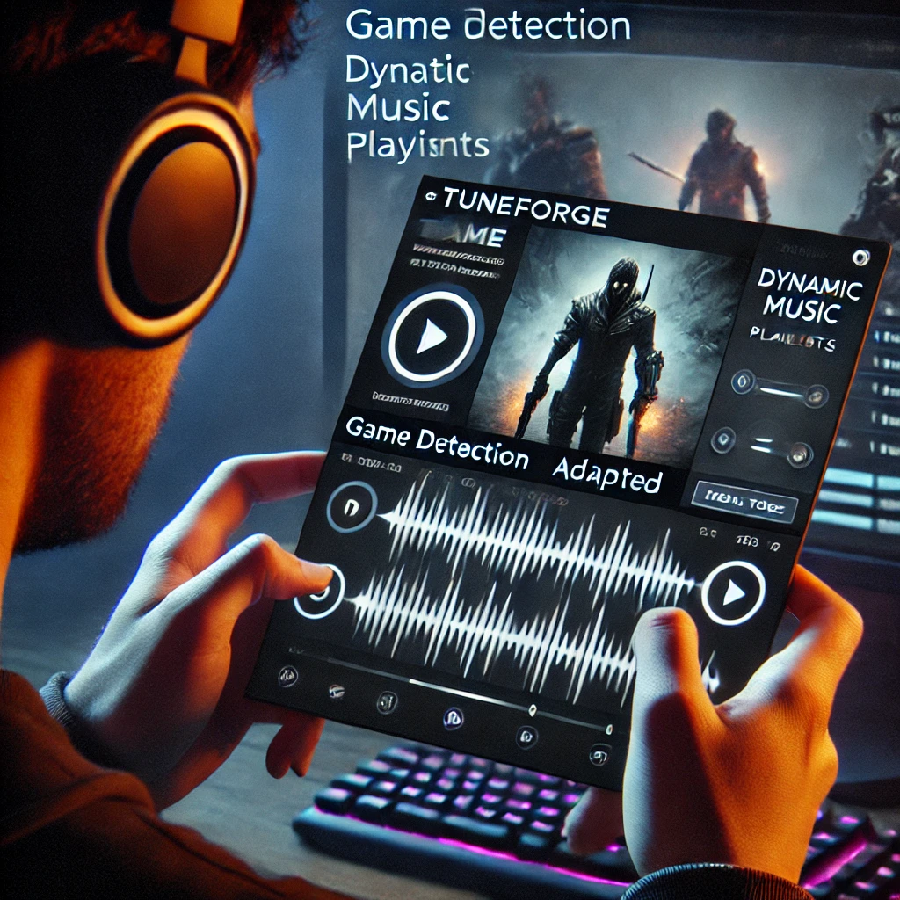

AI-Generated Music
Our AI algorithms create a vast library of music tailored to specific games, genres, or moods, eliminating copyright issues and reducing costs.

AI-Powered Music Streaming for Gamers
Gamers spend countless hours playing their favorite games, but current music streaming services fall short in providing a tailored and immersive audio experience.
Our solution offers a unique and immersive music streaming experience tailored to the gaming community, leveraging AI-generated music to eliminate copyright issues and reduce costs.
Our service detects the game you're playing and adjusts the music accordingly, providing a seamless and immersive audio experience.
Our AI algorithms create a vast library of music tailored to specific games, genres, or moods, eliminating copyright issues and reducing costs.
Our AI adapts music to different styles and themes while maintaining a consistent tone or atmosphere, providing a unique and immersive gaming experience.

Our premium subscription offers a unique and immersive audio experience at a significantly lower price point than traditional music streaming services.

Our service includes features like personalization, community features, game developer partnerships, and mood-based music to enhance the gaming experience.
Our service targets gamers who already subscribe to music streaming services, gamers looking for a more immersive experience, and game developers who want to offer a unique audio experience.

Our AI-generated music, low-cost premium subscription, and unique value adds provide a competitive advantage in the music streaming industry.

TuneForge revolutionizes the music streaming industry by providing a unique and immersive audio experience tailored to the gaming community. Join us in transforming the way gamers enjoy their favorite games.